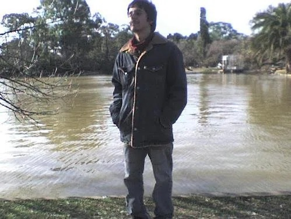
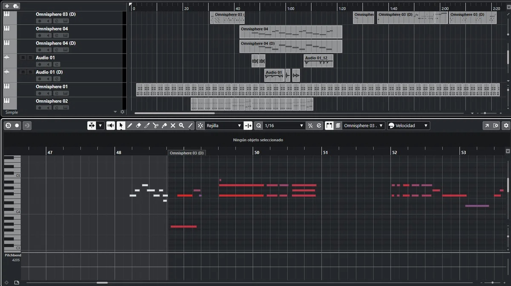

Claps for a Clown
In the end, is it we who are laughing at the clown, or is the clown laughing at us? What happens when the performer—the object of our ridicule—flips the script, and we ourselves become the punchline? This is the question I set out to present in the reconstructed version of my song, "Claps for a Clown."
Around 2006, with my meager musical knowledge at seventeen, I was working on the fourth track of my first album.
That song, like others on the album, became an object of ridicule and mockery due to its technical and structural immaturity. Back then, I was nothing more than a child throwing notes into the air, struggling just to stay in tune. Yet, in my mind, I was convinced I was creating a masterpiece that would bring worldwide fame. The laughter from family, friends, and those at the conservatory was cruel and undeniable evidence of how far my perception had drifted from harsh reality.
Furthermore, I remember being obsessed with the Beatles' frenzy at Shea Stadium while producing that track. I yearned to taste that level of achievement. Believing I earned it, I added "audience applause" effects to the song, as if I were performing before thousands. I dreamed that one day it would become a reality—that people would hear those melodies and offer their applause in the same way.
Now, more than fifteen years later, having matured, I decided to infuse this reconstruction with a strong spirit and irony, giving it a new perspective (a sublimation into a pure work of art). The current title is "Claps for a Clown." The applause that was once meant for the "greatest star in history" has now shifted toward a ridiculed clown. That clown was me. In a world that spits napalm, I had unknowingly, and in all my innocence, painted myself into a clown.

A photo from that time. 2006, somewhere in Buenos Aires, Argentina.
However, both the clown ridiculed by everyone and the work that was a target of mockery for its simplicity have now been "reconstructed," transforming from a child's toy into a high-quality piece of art. While people were busy laughing at the clown, the clown grew, and the work began to transcend dimensions. And now, it is not I who laughs at them—the work itself is laughing at them.
Consequently, this song possesses a multi-layered structure. It opens with the sound of "Cumbia," a style from my home country (Argentina) that is highly danceable yet superficial. It is as if the clown is livening up the party, performing acrobatics, and convincing himself he looks impressive.
But as the track progresses, rock instrumentation and bass join in, and the electric guitar plays short phrases. In that moment, the clown realizes: he and the people are not laughing together; the people are laughing at him.
Therefore, after the guitar solo, the song shifts into a funky transition. I specifically introduced a Clavinet with a wah-wah effect as the lead instrument. The clown accepts his role to "entertain" and, while still believing he looks cool, begins to perform his farce covered in humiliation.
The narrative ends there, with the clown immersed in self-satisfaction. So, in which part of the story does the work laugh at the audience? ...It exists nowhere within it. The work laughs by breaking the fourth wall and stepping outside the narrative. In this real world, the clumsy sequence of sounds made by a dreaming seventeen-year-old boy has transformed into an expression possessing aesthetics, narrative, value, and maturity. The laughter lies in that very fact. When the joke is no longer a joke, the clown becomes someone who continues to laugh silently at something that is no longer even pathetic.
Ultimately, this is the concept I wanted to express, and it harmonizes with the style I have maintained throughout the other tracks of the album.

Mastering session in Cubase.
Please, do not misunderstand me. Do not take this as a denial of being a seventeen-year-old boy with dreams far removed from reality. I am simply alchemizing truth into a work of art. If there is a single lesson, it is that even if you are showered with ridicule, if you persist in what you love, one day you will be the one who laughs.
Nevertheless, a question remains: is a revenge that has taken this many years truly worth it? Fifteen years pass, and both people and the world change. No one cares about an old joke anymore; it is already beyond the horizon of oblivion.
However, regardless of the narrative content, this work is not aimed at revenge. It seeks to demonstrate that a work can prove its own validity, independent of anyone’s perspective. In fact, I knew this would become a satire. I chose the path of laughing at myself, but at the same time, I chose to use my wit and be acerbic toward those who once mocked me. I believe that is what elevates the work to another dimension and gives it depth. Self-deprecation alone is interesting, but it is too simple. I want my work to have layers, just as life does.
Whether it is useful or not, I will leave you with one last thing. Laughter is nothing more than a matter of perspective. In my life, those who laughed at my early works were simply those who found the seeds of a joke there. Even after the work reached a certain level, the laughter did not stop, but it transformed into the voices of those harboring jealousy and envy. Such is the emotion held by those who cannot manifest art themselves. Even under the mask of praise, there are always those who hide a sneer. However, the "weight" of others' laughter remains in our own hands. While we cannot eliminate its influence entirely, we are the ones who control its magnitude.